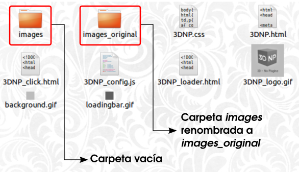
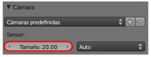

Exportar las mágenes
Lo primero es preparar el lugar de destino. La carpeta donde acaben todos los renders tiene que llamarse images y estar al lado de los archivos 3DNP.html, 3DNP_click.html y 3DNP_loader. Estos archivos están en la carpeta HTML en la que además vemos que ya hay una carpeta con ese nombre (images). Esa carpeta existe porque ya alberga los renders del ejemplo que incorpora 3DNP. Como no tenemos interés en perder ese ejemplo le cambiamos el nombre (de images a images_original) y después creamos una carpeta nueva vacía de nombre images.

Nos vamos a Blender y en el panel Render  usamos la botonera Salida y el icono de la carpetita para determinar la ruta hacia images que acabamos de dejar preparada. Blender le da un nombre automáticamente al archivo de salida; este nombre es frame y no lo cambiaremos bajo ningún concepto.
usamos la botonera Salida y el icono de la carpetita para determinar la ruta hacia images que acabamos de dejar preparada. Blender le da un nombre automáticamente al archivo de salida; este nombre es frame y no lo cambiaremos bajo ningún concepto.
El peso de las imágenes
Si nos fijamos en la imagen anterior 3DNP exportará en formato JPEG con una calidad del 65%. Este valor tan elevado en la compresión viene determinado por el hecho de que necesitamos imágenes lo más ligeras posibles para facilitar el refresco entre una y otra. Pensemos que es muy habitual poner este material interactivo en web y este tipo de asuntos suelen marcar la diferencia entre una navegación confortable y otra que no lo es.
3DNP ha calculado automáticamente el número de renders que tiene que realizar al ser 10 los grados entre posición y posición; concretamente necesita 36 (360/10). Blender nos informa de este dato en el panel Render  en la botonera Dimensiones.
en la botonera Dimensiones.
Añadimos un par de cambios más:
- El tamaño de los renders con Resolución X y Resolución Y a 450.
- Seleccionamos la cámara y en su panel cambiamos el valor Tamaño a 20.00.

Y, definitivamente, ha llegado el momento de crear los renders. En esta ocasión usaremos el botón Animación del panel Render  .
.
Tras una dosis de paciencia la carpeta images acabará llena con los 36 renders.